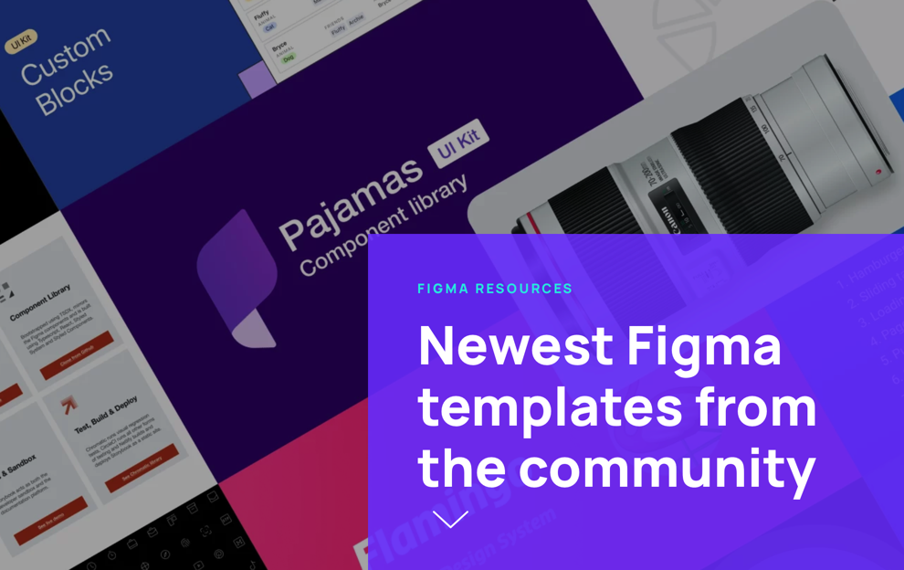
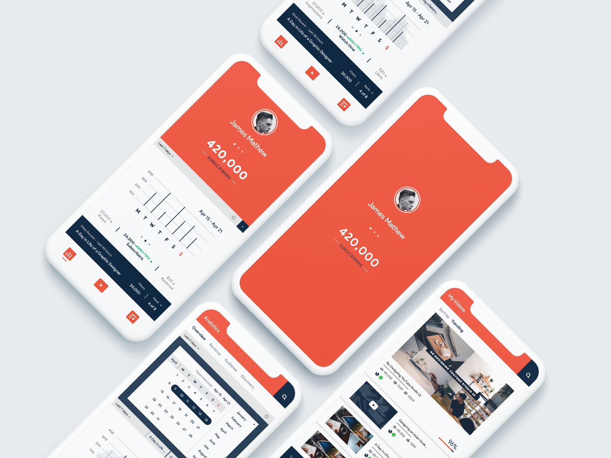
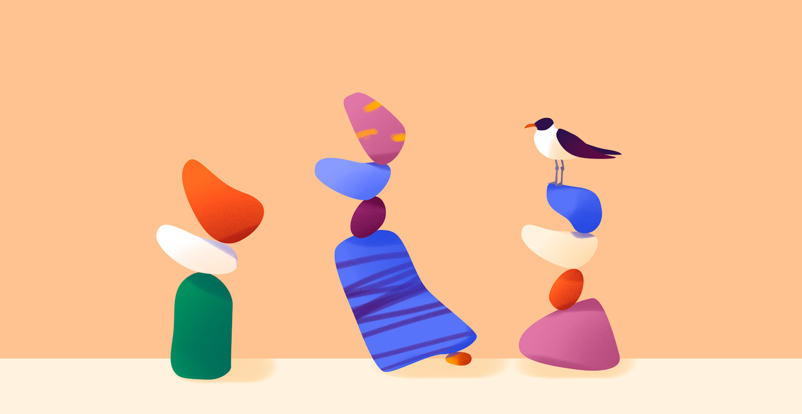
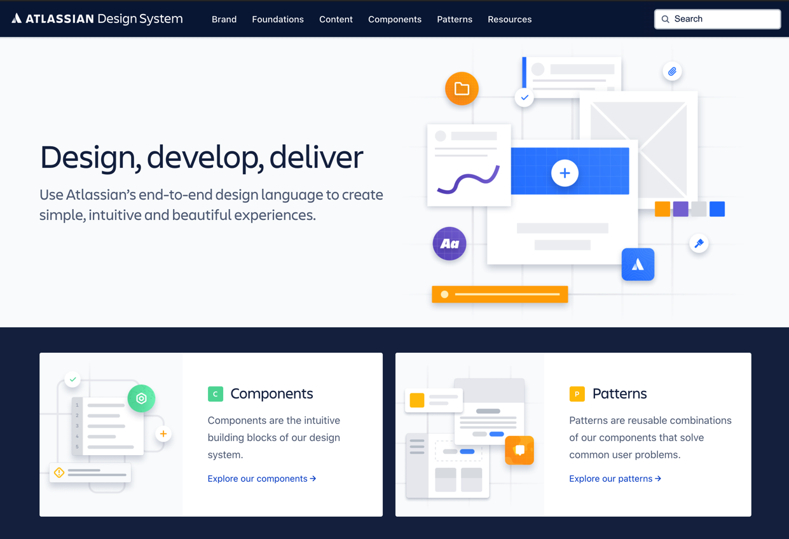

设计周刊 Design Weekly #20
Thu, Aug 13, 2020
🏷 设计资源
这个夏天最受欢迎的 Figma 插件们
https://setproduct.com/blog/figma-summer-top-15
精心挑选的Figma插件合集：UI套件、用户体验工具、设计系统、图标、插图等。

🏷 设计案例
YouTube Studio 重新设计
https://uxdesign.cc/youtube-studio-app-redesign-ui-case-study-300547c5d2f2
作者Shantanu Kumar 对 YouTube Studio 的重新设计。

🏷 设计文章
构图中的平衡：如何平衡你的设计？
平衡是元素的对立，能创造平衡与和谐。平衡的状态对观者来说是直观舒适的。
用户本能地对不平衡的设计感到厌烦。如何创造一个有吸引力的平衡？

🏷 设计新闻
Atlassian Design System 搬家了
Atlassian 设计系统是大家最常见到的学习案例，他们的设计系统不仅仅是如何使用他们的标识、品牌色、字体和其他的设计原理，而且还讲述了如何使他们的品牌更加个性闪耀，例如颜色以龙血、牛肉干这样的词去命名。
新的设计系统网站包含以下内容✨：
- 纯粹的设计文档网页；
- 设计和开发统一目标：用户所需要的内容；
- 重新设计和重新构架的基础架构；
- 更好的设计开发体验；
还有很多细节优化，enjoy❤️~

🏷 随便看看
被大家围观的设计周会是怎样炼成的？
来一探流利说“网红“周会的与众不同之处吧。